JCI K.I.D.S.: Knowledge for Indigent but Deserving Students (Year 15)
By JCI Zamboanga
Donate
BASIC INFORMATION
Sponsors
- Local Government of Zamboanga
- Zamboanga City Disaster Risks Reduction Office
- City Tourism Office of Zamboanga City
- Department of Education Region IX
- Barangay Local Government of Salaan
- Zamboanga City Water District
- Tingog Partylist
- Unilever Philippines
- Southern Mindanao Enterprise
- Universal Rubina Corporation
- Home Style Depot
- Anchors Geotechnical Services
- Smart K Materials Testing Services
- Freedom Printers
- Natures Spring
- Chowtime Cuisine
- Julie’s Bakeshop
- Big Dawgs Bistro
- Crystal Clear Vision
- 5th Special Action Company – Special Action Forces
- Macaso Architecture Firm
- Associate Member Ernesto Ubando
- Atty. Melchor Sadain
- Hon. John Dalipe
- Hon. Mannix Dalipe
- Dr. Zaida Urao
- Dr. Romeo Bagongon
- Uris Fonollera
- Ahmed Yamani Tuttuh
- Jonald Macrohon
- John Federick Ruiz
- Vince Edward Chan
Beneficiaries
- 167 Elementary Learners of Balunu Elementary School
- 8 Teaching Staff
- Parents
- Barangay Local Government Unit
- Members of the community
Objective
JCI K.I.D.S. (Knowledge for Indigent but Deserving Students) seeks to provide for the needs of Balunu Elementary School learners and teachers as well as to employ the necessary aid anchored to the pre and post assessment made and deemed problems of the community where the school is situated.
Its primary purpose is to equip the learners of the said school in time for the fast-approaching opening of classes in August.
As years pass by, the chapter continuously amplify the programs and projects being implemented, some of these include a magic and dog show for the kids, hygiene kits distribution which is in time during this Pandemic, and even a PAINT-takase wherein the chapter pride itself to offer a well-painted and arranged school environment for the learners and teachers of the school.
This milestone was made possible by the numerous sponsors, partners, government entities, private firms, non-government organizations and philanthropic groups who have contributed so much during the Movie-for-cause Fund-Raising Program for JCI K.I.D.S. last December 8, 2020, and the actual sponsorships for slippers, school supplies, customized bags, and other materials.
Indeed, a project anchored on the concept and materialization of Active Citizen Framework and collectively funded by various civic organizations and chapter income generating initiatives!
Overview
JCI K.I.D.S. is an annual program held by JCI Zamboanga, Inc. at the beginning of every school year for its adopted beneficiary - Balunu Elementary School situated 21.4 Kilometers from the center of Zamboanga City.
Partnering with the City Government of Zamboanga, Zamboanga City Schools Division Office, other local public and private agencies, the organization turns over school materials and supplies donated by private personalities, private businesses, and foundations. Other needs of the school and the community around it were also identified after a close coordination with the local authorities especially this year’s implementation which is closely and tightly coordinated with the Zamboanga City Disaster Risks Reduction Management Office and Office of the City Tourism in seeking permission towards approval of the said milestone for the chapter.
The project was given birth during the incumbency of Zamboanga Jaycees President Cromwell Ong in 2008 who answers the call to being an active citizen and responsive organization towards promoting quality and well-founded education in far flung areas in the city. Out of the need of the community in Barangay Salaan particularly Balunu Elementary School for school children to have the essentials like school supplies, school bags, proper haircut and slippers, hygiene kits to name a few, the local organization launched JCI K.I.D.S. or Knowledge for Indigent but Deserving Students.
Now in its 15th year, JCI K.I.D.S. has grown into a festival of sorts.
A total of 41 activities, programs and projects based on the needs of the school were successfully implemented and provided.
With the newly installed School Head, a must to introduce and brief as to what JCI K.I.D.S. is all about was made into materialization. With the aid of the 2018 National Secretary General and 2017 President of JCI Zamboanga, JCI Sen. Rodolfo Saavedra, JGF as he thoroughly and informatively introduced to the new School Head with materials showcasing what had transpired in Balunu Elementary School for 15 years but not limited to pictures, videos, magazine issues, and newspaper release.
This is JCI's Active Citizen Framework or ACF in action!
Video Highlights: https://www.youtube.com/watch?v=US7LtPCBvf8
Result
Prior to starting the program proper, a contact tracing was made while distributing face masks, face shields, and sanitizing every single person entering the venue as adherence to standard protocols. After being able to run the opening program, the learners, along with the rest of the attendees were entertained by a Magic Show and was immediately followed by the distribution of snacks and beverages as part of the feeding program activity prepared in coordination with the 5th Special Action Company – Special Action Forces. Moreover, while distribution of snacks and feeding is on-going, some learners and attendees availed the free haircut, face painting, parlor games, educational movies, child-friendly storytelling, and Zumba Dance Fitness program rendered by the teaching staff of the school and partners and other performances from our dearest learners dedicating to all who have been with the journey in making the JCI KIDS in its 15 year.
Simultaneous to the above-mentioned, to answer the call to get the teachers and community involved, various trainings and lectures were conducted, which include an Introduction to Mental Health during the Pandemic, Lecture on Family Planning, Lecture on COVID Vaccines, and Safety Standard Protocols, and Introduction to Rabbit Business Production. Moreover, to amplify the livelihood opportunities, a lecture and introduction to ACPC-KAYA and ACPC-ANYO was discussed by a representative from Office of the City Agriculture in boosting their knowledge on finding funding opportunities for their agri-business, as their primary source of income.
On one hand, parents, teachers, barangay and military personnel joined hand in hand in beautifying the school campus by painting the campus’ walls, gate, stage, and classroom walls at the same time trimming the grasses in the open field, and doing the annual Brigada by arranging and reorganizing the classrooms, and turned over to the school boxes of educational and entertainment books through a mini library installation within a school classroom, and planted and turned-over fruit bearing and Philippine native trees around the vicinity of the campus as adherence to Think Green and Green Link program of JCI Philippines and JCI Senate Philippines, respectively.
On the other hand, before departing, all the one hundred sixty seven (167) invited enrolled learners of Balunu Elementary School, from day care up until the sixth grade, received their very own sets of school supplies, which include notebooks, paper pads, pencils and/or pens, erasers, crayons, rulers, pencil sharpeners, and glue and/or paste. Each of them has also received their very own JCI K.I.D.S. school bags and pairs of slippers.
In encompassing the sheer determination to meet the needs of the community, a free eye and medical consultation was stationed in the school with free eyeglasses and medication. Since they are situated in an elevated area far from urbanization, people in the Sittio fails to receive substantial medical attention, hence we bring to them the medical attention they needed. This is accompanied by the distribution of Condoms and Pills as contraceptives with the representative form Population Commission Regional Office 9 as the Sittio was recently tagged to have a rising case of teenage pregnancy.
On top of all these, a renewal of Memorandum of Agreement was made into action as the newly installed School Principal and President of JCI Zamboanga forged their signature as a sign of continuous and amplified agreement in lifting each other’s hand towards advocating quality education for the learners of Balunu Elementary School.
Action Taken
In the course of the long-day implementation, a total of 41 projects were successfully implemented and executed in the event of the 15th Year of JCI K.I.D.S. (Knowledge for Indigent but Deserving Students):
- JCI K.I.D.S. (Knowledge for Indigent but Deserving Students
- Renewal of Memorandum of Agreement
- Educational and Inspirational Books Turn-over
- Project FEED: Food to Eradicate and End Hunger Among the Destitute
- Nutri-Bun for a Healthy Tiyan
- Facemasks for a Safe Mass
- Alcohol for the Whole
- Face Shields for a Safety Kid
- Vita-shield for Battling Malnutrition
- KITS for KIDS: School Supplies Distribution
- BAGS to School
- One PAIR at a Time: Slippers Distribution
- EYEglasses for Clearer Eyesight
- Fruit Trees Turn-over
- KONTRA-septives: Condom Turn-over and Distribution
- KONTRA-septives: Pills Turn-over and Distribution
- Plant your Plate: Veggie Seeds Distribution
- Introduction to ACPC KAYA
- Introduction to ACPC ANYO
- Introduction to Rabbit Production
- Lecture on Public Safety Health Protocol
- Lecture on COVID 19 Vaccine
- Lecture on Family Planning
- Lecture on Mental Health
- Free Haircut Activity
- Open Ukay-Ukay
- Cosplay Exhibit
- Feeding Program for KIDS
- A Day of being special with the art of Face Painting
- Eye-Konsulta Mo: Eye Consultation
- Free Haircut Activity
- A Parlor Games for the JCI KIDS
- Cleaning Activity for a Safe Learning Space for KIDS
- Think Green: Tree Planting Activity
- PAINT-tikase
- Tell-TALE: Story Telling for KIDS
- Zumba Dance Fitness Program
- JCI Zamboanga joins Brigada Eskwela 2021 for KIDS
- Getting Educated with Educational Movie
- Mini School Library Turn-over
- A Magical Day for the KIDS of Balunu
With the allotted budget of Php 50, 000, a total of Php 5,000 was returned to the organization.
| Item / Service | Quantity | Amount |
|---|---|---|
| Food | 200 x 100 | 20,000 |
| Tarpaulin | 41 x 180 | 7, 380 |
| Secretariat Materials | 5,000 | |
| Miscellaneous | 3,000 | |
| JCI Bags to School | 75 pcs. | 7, 500 |
| Other Expenses | 2, 120 | |
| Total: | 45, 000 | |
| Remaining Money: | 5, 000 |
Recommendation
- A constant and consistent line of communication shall be kept between and among the organization, and the chapter especially as to recent updates and notices and needs of the learners and of the community.
- A wider sponsorship shall be deemed essential in running and sustaining the cause of the program as it aims to reach more and more clienteles each year.
- A strategic source of funding shall continuously be initiated in order to fully sustain the program annually and to bring smiles into their faces of hope.
General Planning and Execution
Planning for JCI K.I.D.S. started as early as seven months before the planned date of implementation. First, a fundraising project was implemented intended to utilize the proceeds for JCI K.I.D.S. Planning stage for this was set at the 6th General Membership Meeting held on March 6, 2021.
Coordination and communication with the new Principal Mr. Kerwin F. Mendez was initiated in December, 2021 during the fund-raising event and revisit the school on February 23, 2021 where the Principal was informed as to what is JCI K.I.D.S. and of the number of possible enrollees and their needs and consequently the community.
The initial committee meeting was held on April 9, 2021 where the different projects were lined up and the different project chairs were delegated to each of their tasks. Possible sponsors and benefactors were also identified. Request letters were sent out to each identified sponsor and benefactors the following days and the rest of the days were set for collections of the assigned materials for each project.
The final committee meeting was done on 23rd of June 2021 where all the necessary materials that were collected from the sponsors and benefactors were consolidated, packed and readied for distribution.
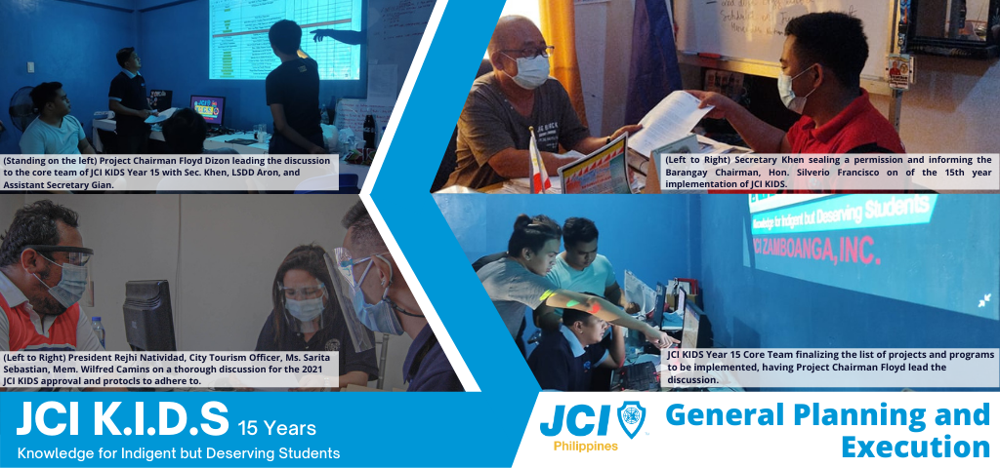 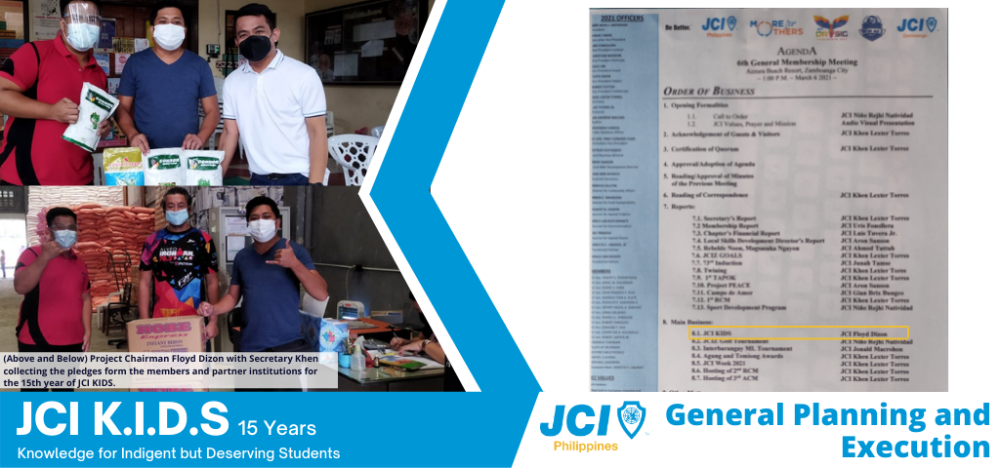 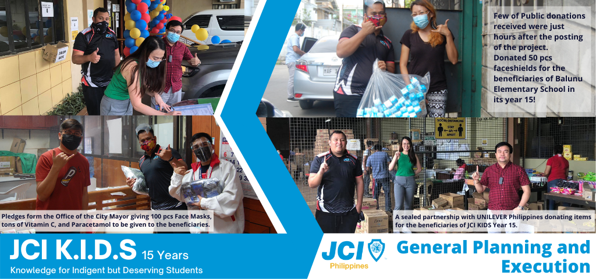 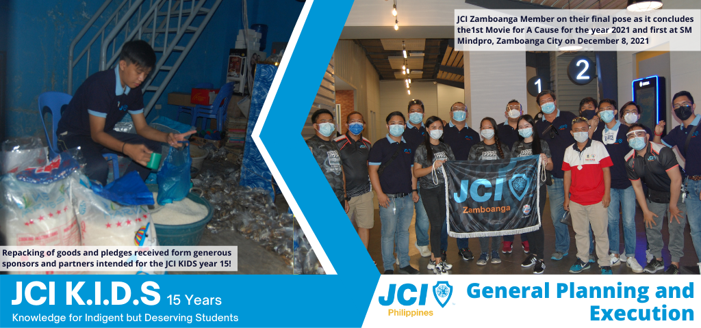 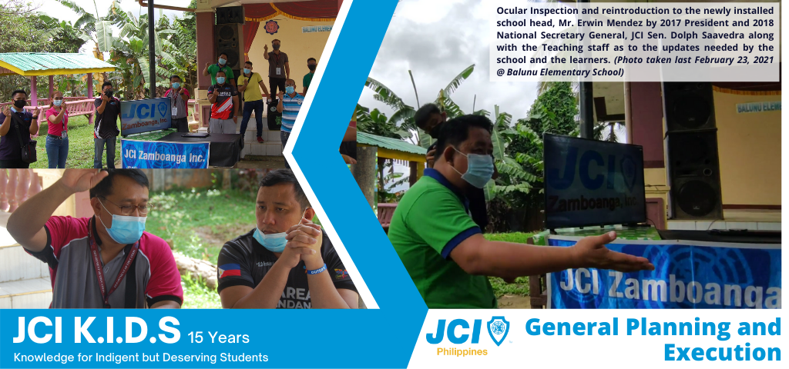
Effectiveness of Program
JCI Zamboanga, Inc. has always been a firm believer that education is indispensable to the development of an individual and consequently, the community. The deficiency of resources for public schools located in far flung areas of Zamboanga City is still one of the most common yet barely addressed issues faced by the city.
Thus, started out as a project to provide school supplies and materials to the school children of Balunu Elementary School fifteen (15) years ago, JCI K.I.D.S. is now an annual program for the Organization. Having adopted the school as its own exclusive beneficiary for the program, the number of individual projects implemented has increased regularly throughout the years, catering to not only just the students anymore but to essentially include the teachers, parents and other members of the community and great involvement of the Barangay Officials and Department of Education.
Considering how this simple project has grown into an annual program which is now in its 15th year and how the number of students and the school itself has flourished is a clear proof that JCI K.I.D.S. is indeed effective and how it touches lives. Truly, JCI's Active Citizen Framework is at work!
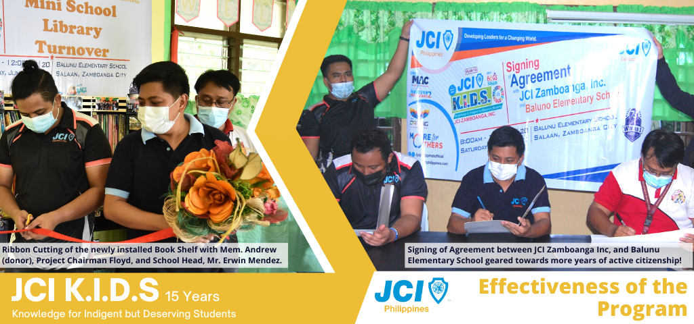 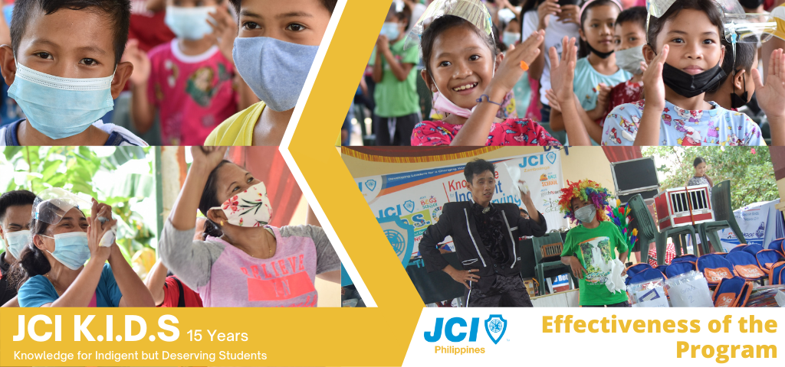 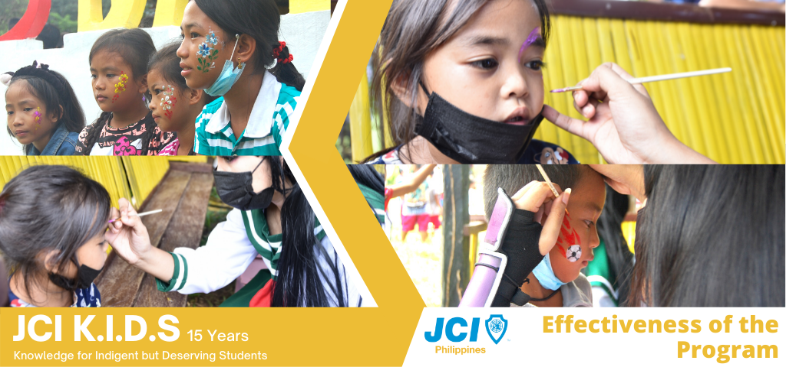 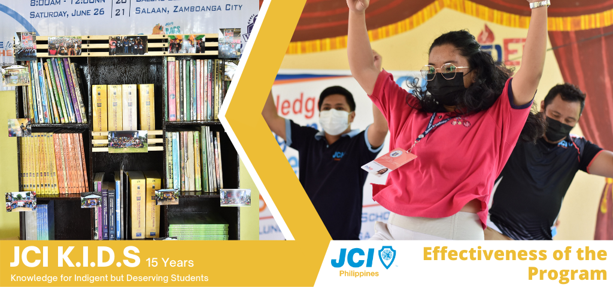 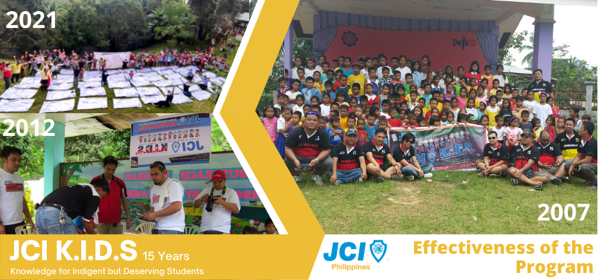
Benefit to the Community
Situated 21.4 kilometers from the center of Zamboanga City, Balunu Elementary School learners hike daily to and from the school unless they own their own vehicle, the cost of a motorcycle ride, which is the only means of transport and not all the time available, is too expensive.
Being this far from the city and the community composed of mostly farmers, school materials are scarcely acquired nor can be afforded by their families. Once every year, school supplies and books donated by many partners of JCI Zamboanga ensure that these children have enough materials needed for them to take on the rigid requirements of school.
Additionally, parents, teachers and barangay officials benefitted from the lectures and training seminars that included introduction to possible livelihood in their vicinity through a speaker from the City Agriculture Office. Moreover, in this time of Pandemic, many were afraid to present themselves to hospitals, thus we bring medical professionals to them who rendered medical and eye consultation.
Furthermore, the plan for upgrading the water system provides the school with the much needed water for their toilets and other hygiene needs through linking the school and community in general to Zamboanga City Water District.
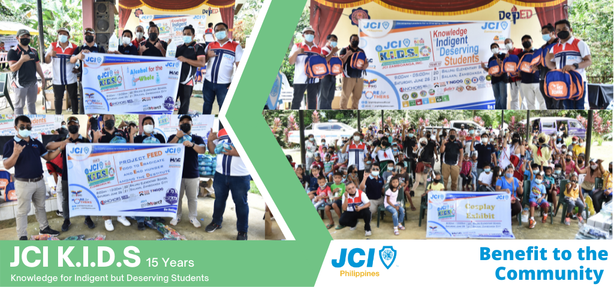 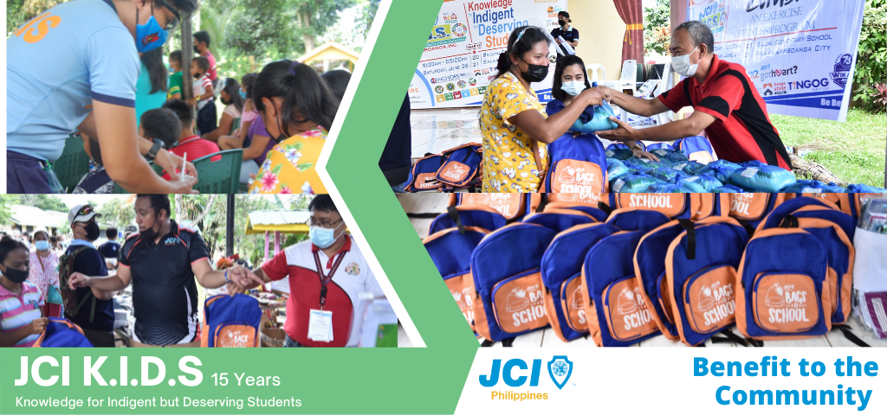 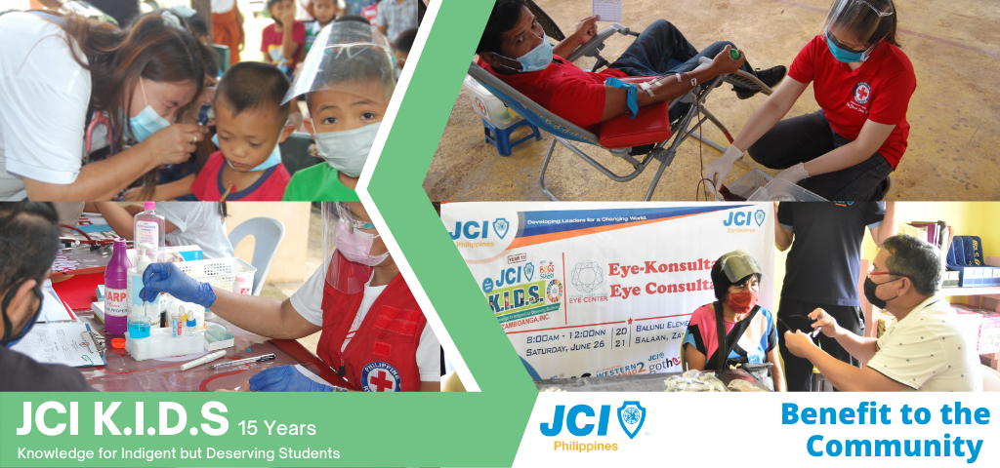 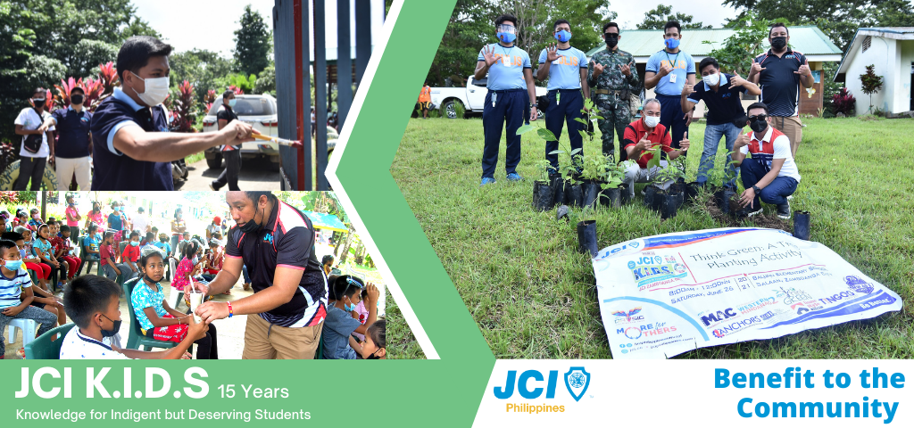 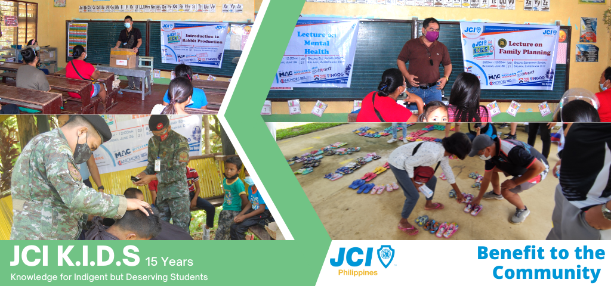
Participation of Own JCI Local Organization Members and Public
A total of twenty one (21) members (45.65%) that have attended have participated in each of the projects implemented. For protocol reasons, all one hundred sixty nine (169) learners, eight (8) teachers, parents and Barangay officials have also participated. The program had a number of other volunteers coming from the 5th Special Action Company – Special Action Forces, the Philippine Red Cross, youth volunteers from Zamboanga Cosplay groups, medical practitioners and nurses, who provided an enormous hand in carrying out some of the other projects.
No less than the Congressman for District 1 of Zamboanga City and 2002 Chapter President of JCI Zamboanga, JCI Sen. Jose Manuel Mannix Dalipe came and attended the whole day program. He expressed elation over the fact that a service-oriented organization such as JCI is continuously helping the government reach far-flung schools and provide the much-needed necessities to the school children, teachers and the community as a whole.
He hopes that with the lead that JCI Zamboanga, Inc. is taking, more benefactors, partners and sponsors will come together and converge time, efforts and resources to the project. He envisions a bigger and better JCI K.I.D.S. with so many more civic-oriented organizations joining in the future!
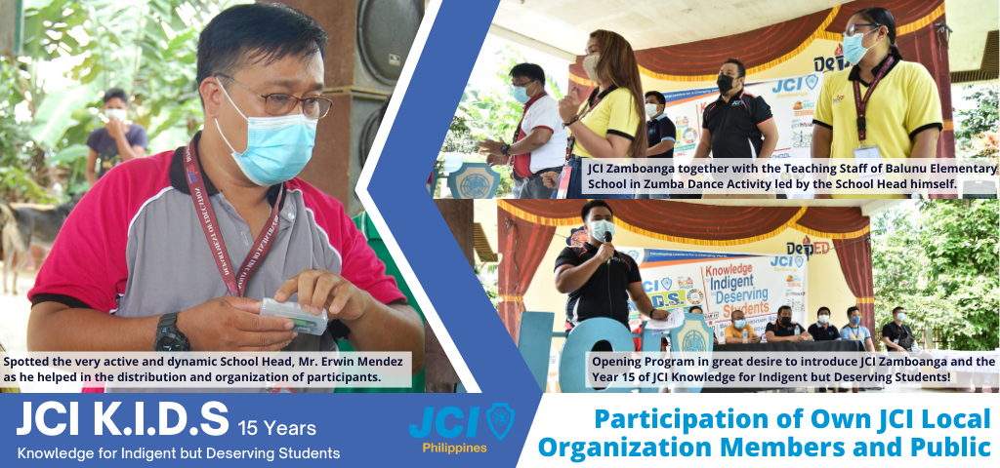 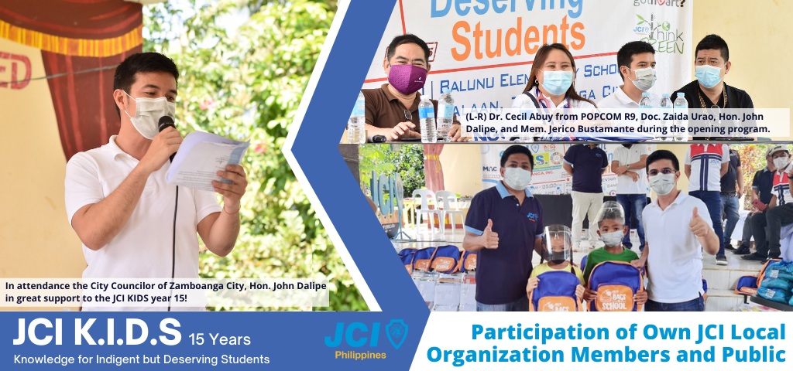 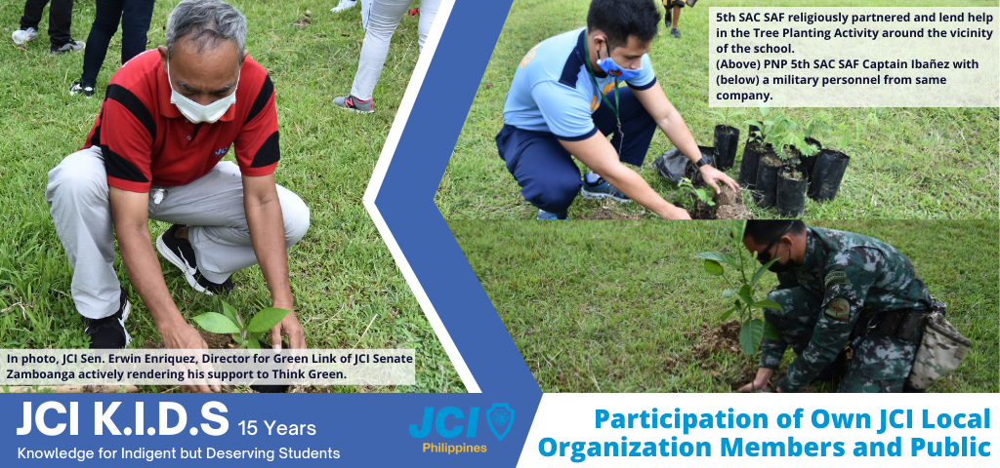 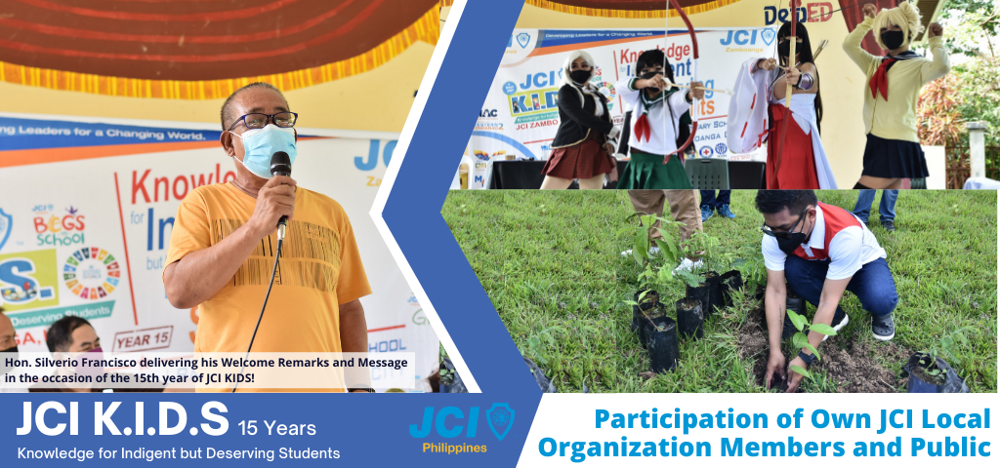 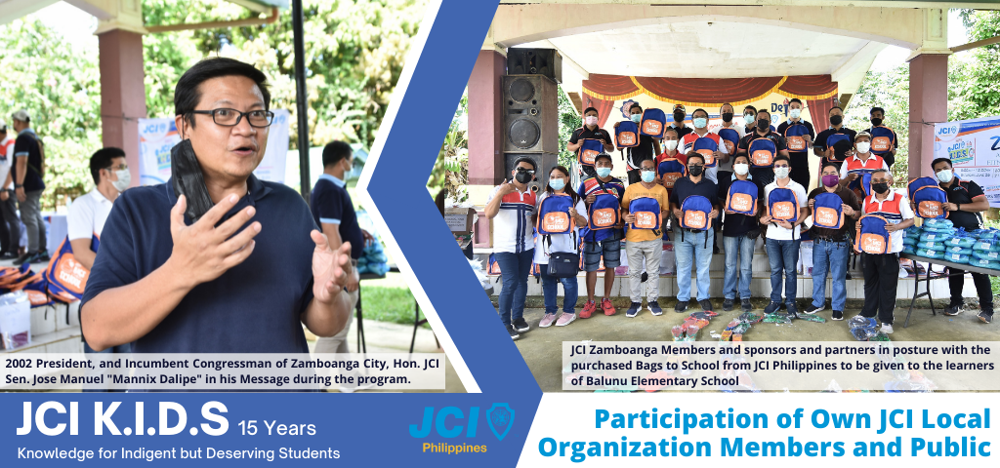
Value to JCI
A strong and well-founded partnership with other local agencies and organizations to implement this program lives up to the JCI’s own creed and values that “the brotherhood of men transcends the sovereignty of nations.”
Members of JCI Zamboanga Inc, old and new, benefitted great deal from chairing their individual projects. These projects are tailored specifically on each of the chair’s strengths to further bolster their personality and leadership as well as to ensure that the project proceeds successfully. Essentially, it is also anchored on JCI Active Citizen Framework - a needs-based sustainability solutions mechanism.
Quality Education being one of the top priorities for the organization and having done this program for over fifteen (15) years, the smiles that we have brought to the children, teachers and community members around Balunu Elementary School are the only gratitude that we strive for. This program is of great value to the organization, because with it, we prove time and time again that “service to humanity is the best work of life.” These children and their community will carry on with them the memory of the deeds of JCI Zamboanga, Inc., which helped them in what little way they got through elementary school.
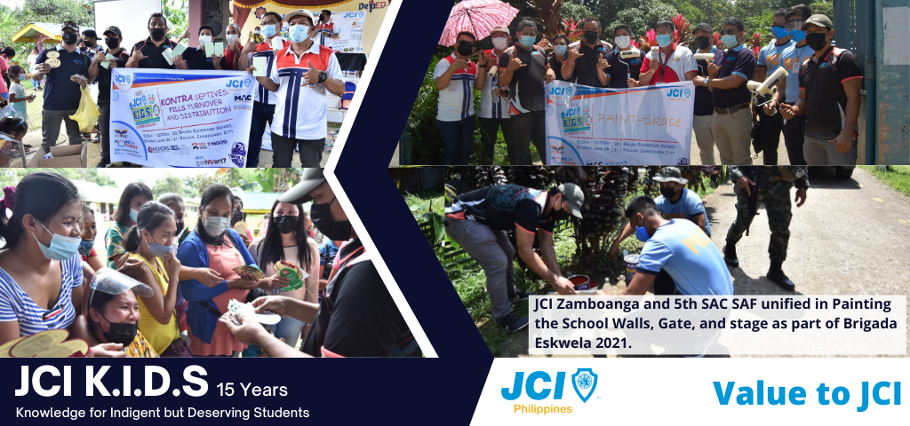 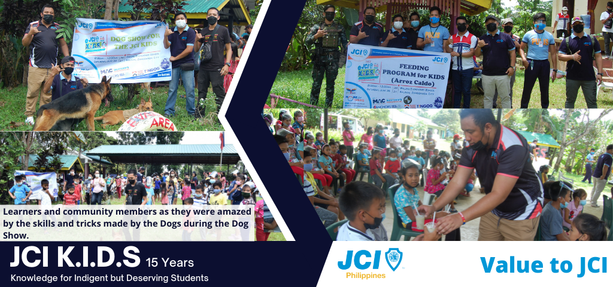 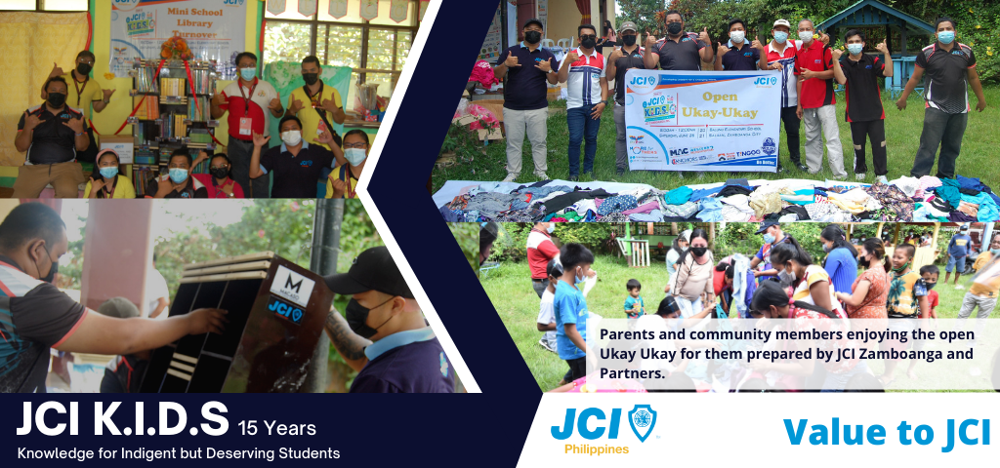 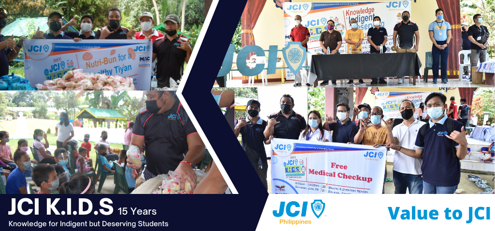 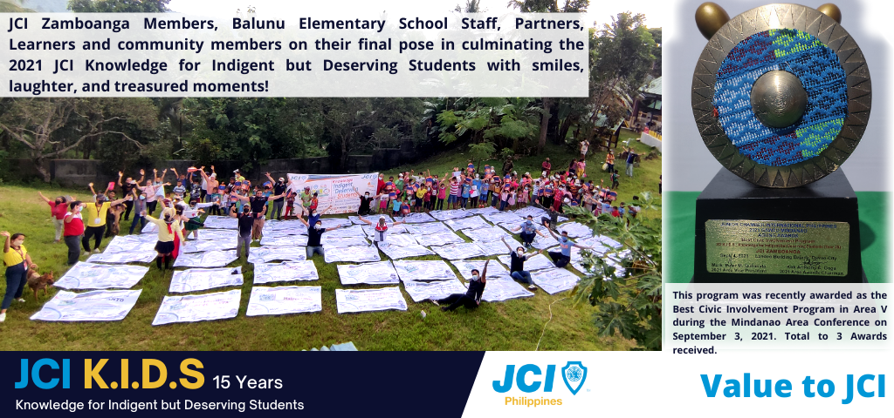